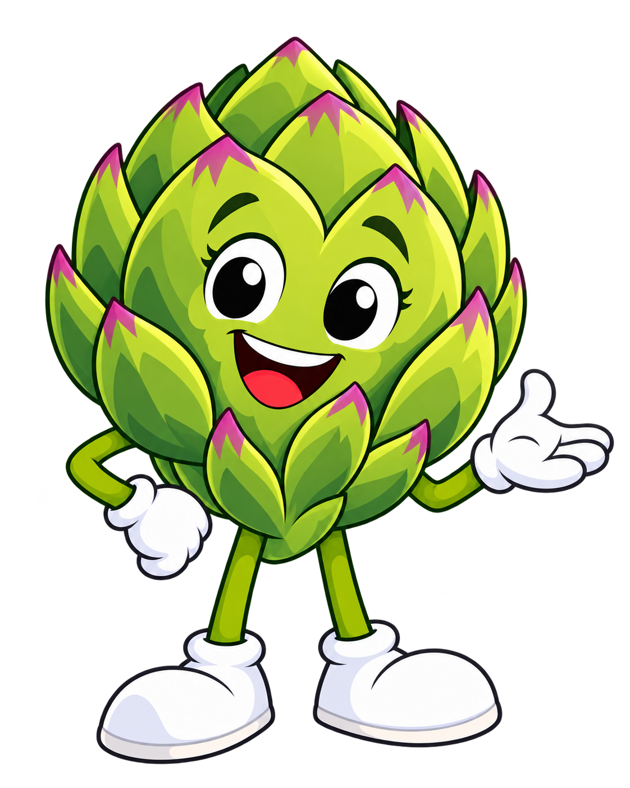
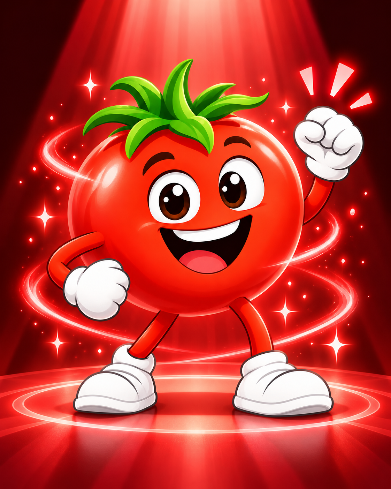
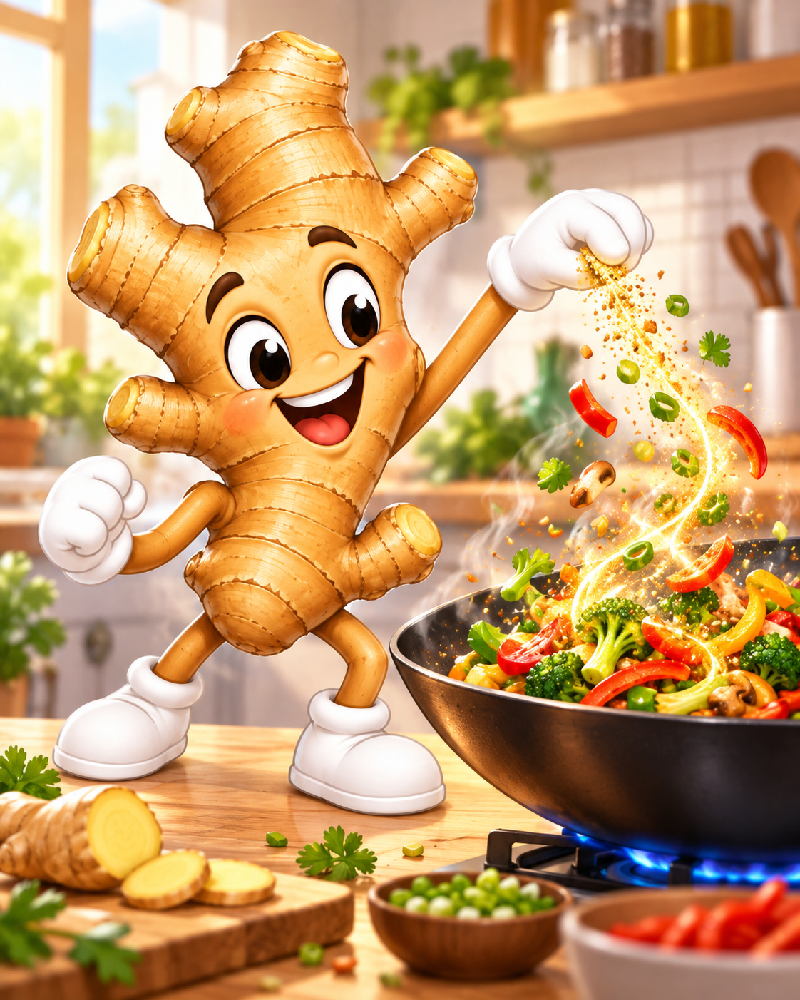

GINGEROLRHIZOME✨FLAVORWARM & ZESTYFRESH OR GROUND☕SPICE
SWIPE THROUGH THE MARKET
Let the veggies tell you their story.
Each character gets the whole stage. Swipe, use the arrows, or choose a character below to learn what makes their food interesting.
1 / 6
🧄 GARY THE GARLIC
“Everybody talks about the vampire thing… but I’ve got way more going on than that!”
GARLIC: THE SUPER CLOVE
Small clove.Big powers.
Gary’s story is about realizing that being small does not mean being unimportant. Garlic brings bold flavor, useful nutrients and naturally occurring plant compounds to the table.
TAP A GARLIC POWER
Plant compounds
Garlic contains naturally occurring sulfur compounds. Chopping or crushing garlic changes some of those compounds and creates much of the smell and flavor garlic is famous for.
When garlic is chopped or crushed, enzymes help form compounds including allicin. That chemistry helps create garlic’s famous aroma and bite.
🥕 CARRY THE CARROT
“I might be a little shy… but that doesn’t mean I don’t have something important to bring to the table.”
CARRY'S STORY
Quiet courage.Bright benefits.
Carry is thoughtful, a little shy, and stronger than she sometimes realizes. Her story is about finding the courage to step forward, try something new, and discover that standing out can actually be one of your strengths.
TAP A CARROT POWER
Beta-carotene
Carrots are rich in beta-carotene, one of the plant pigments that gives orange produce its color. The body can convert beta-carotene into vitamin A.
“See? You don’t have to like carrots one way. You just have to find your way.”
🌿 ARTIE THE ARTICHOKE

“Hey, I know I look a little different. That’s kind of the point.”
ARTIE'S COOL ENERGY
There’s something goodunder the layers.
Artie is calm, curious, and comfortable being a little different. His story encourages kids to explore unfamiliar foods instead of deciding what they think before they’ve really given something a chance.
TAP AN ARTIE LAYER
Fiber
Artichokes are especially notable for dietary fiber. Fiber helps support normal digestion and is one reason vegetables are an important part of everyday meals.
Outer leavesInner leavesThe chokeThe heart
OUTER LEAVES
Start on the outside. Pull away the firm outer leaves and keep exploring inward.
“One layer at a time.”
🍅 TOMMY THE TOMATO

“Juicy. Loyal. Full of heart. That’s kind of my whole thing.”
TOMMY'S BIG HEART
Bright red.Ready for anything.
Tommy is friendly, brave, supportive and full of energy. He is the friend who jumps in when the crew needs help, cheers everybody on, and proves that bringing heart to the team can be its own kind of superpower.
TAP A TOMATO POWER
Lycopene
Tomatoes contain lycopene, a red carotenoid plant pigment. It is one of the compounds that gives many ripe tomatoes their bright red color.
🍌 NANNER THE BANANA
“You bring the adventure. I’ll bring some fuel!”
NANNER'S GOOD VIBES
Peel.Smile.Move!
Nanner is the cheerful, grab-and-go friend who brings energy, encouragement and a big smile to every Market Veggies adventure.
TAP A BANANA POWER
Fuel for Fun
Bananas provide carbohydrates, which your body breaks down and uses for energy during play, learning and everyday activities.
NANNER'S RIPENESS REMIX
Which banana would you pick?
Choose green, yellow or spotted to discover how bananas change as they ripen.
GINGY THE GINGER

“A little zing can wake up your whole plate!”
GINGY'S ZESTY ADVENTURES
A little zingchanges everything.
Gingy is the small-but-mightyflavor explorer. Find out how this knobby little plant brings big personality to foods from around the world!
TAP A GINGER DISCOVERY
Flavor Kick
Ginger has a zesty, slightly peppery flavor. Just a little can add a bold new taste to a savory dish.
GINGY'S FLAVOR MATCH-UP
What should Gingy flavor next?
Pick a food or drink. Every choice is a tasty way to use ginger!
Food and nutrition information here is general education for families and is not a substitute for individualized medical or nutrition advice.